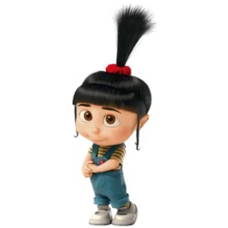

Agnes Gru is one of Gru and Lucy's three adopted daughters, alongside her big sisters Margo and Edith. She is the youngest child of the three sisters. She greatly adores unicorns, as shown on various occasions. She appears in all four Despicable Me films and several of the mini movies.
| Gender | Female |
| Age | 6 |
| Eye color | Medium Brown |
| Hair color | Jet Black |
| Father | Felonius Gru |
| Mother | Lucy Wilde |
| Siblings | Margo Gru, Edith Gru |